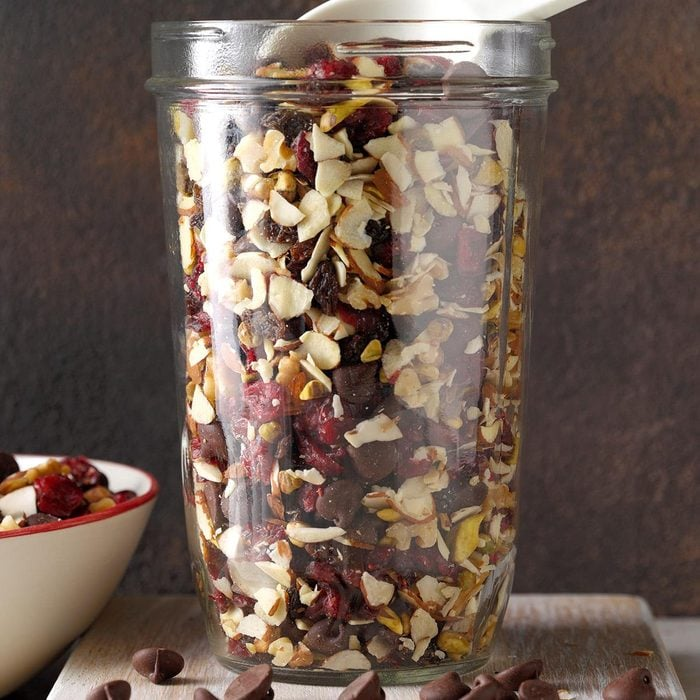
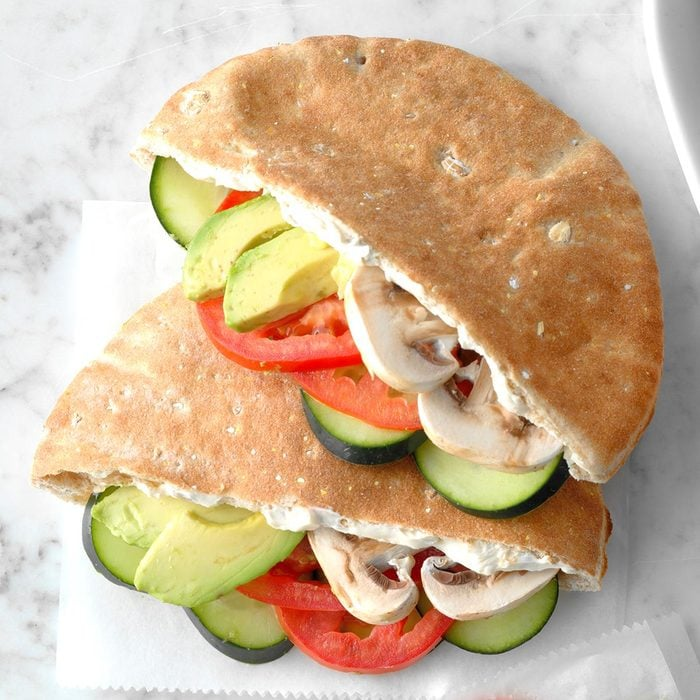
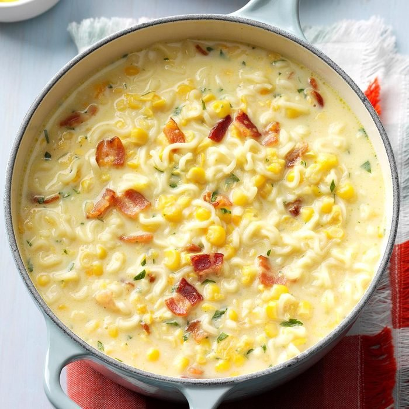
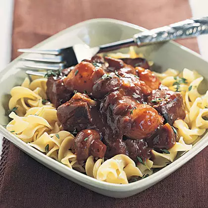

Toss together all ingredients. Store in airtight containers.
Nutrition Facts:
1/4 cup: 176 calories
11g fat (3g saturated fat)
0 cholesterol
16mg sodium
21g carbohydrate (15g sugars, 3g fiber)
3g protein

Cranberry Dark Chocolate Trail Mix
Cranberry Dark Chocolate Trail Mix
Ingredients:
1 package (10 ounces) dark chocolate chips
1-1/2 cups dried cranberries (about 8 ounces)
1-1/2 cups sliced almonds
1 cup raisins
1 cup coarsely chopped walnuts
1/2 cup pistachios
Directions:
Toss together all ingredients. Store in airtight containers.
Nutrition Facts:
1/4 cup: 176 calories
11g fat (3g saturated fat)
0 cholesterol
16mg sodium
21g carbohydrate (15g sugars, 3g fiber)
3g protein

Fresh Veggie Pockets
Fresh Veggie Pockets
Ingredients:
1 carton (8 ounces) spreadable cream cheese
1/4 cup sunflower kernels
1 teaspoon seasoned salt or salt-free seasoning blend
4 whole wheat pita breads (6 inches), halved
1 medium tomato, thinly sliced
1 medium cucumber, thinly sliced
1 cup sliced fresh mushrooms
1 ripe avocado, peeled and sliced
Directions:
In a large bowl, combine the cream cheese, sunflower kernels and seasoned salt; spread about 2 tablespoons on the inside of each pita half. Layer with the tomato, cucumber, mushrooms and avocado.
Nutrition Facts:
2 filled pita halves: 434 calories
23g fat (2g saturated fat)
37mg cholesterol
571mg sodium
48g carbohydrate (6g sugars, 8g fiber)
14g protein

Ramen Corn Chowder
Ramen Corn Chowder
Ingredients:
2 cups water
1 package (3 ounces) chicken ramen noodles
1 can (15-1/4 ounces) whole kernel corn, drained
1 can (14-3/4 ounces) cream-style corn
1 cup 2% milk
1 teaspoon dried minced onion
1/4 teaspoon curry powder
3/4 cup shredded cheddar cheese
1/3 cup cubed cooked bacon
1 tablespoon minced fresh parsley
1 tablespoon minced chives
Directions:
In a small saucepan, bring water to a boil. Break noodles into large pieces. Add noodles and contents of seasoning packet to water. Reduce heat to medium. Cook, uncovered, for 2-3 minutes or until noodles are tender.
Stir in the corn, cream-style corn, milk, onion and curry powder; heat through. Stir in the cheese, bacon, parsley and chives until blended. If desired, top with additional cheddar cheese and additional minced fresh chives.
Nutrition Facts:
1 cup: 333 calories
9g fat (5g saturated fat)
17mg cholesterol
1209mg sodium
49g carbohydrate (13g sugars, 4g fiber)
13g protein

Beef Burgundy Over Noodles
Beef Burgundy Over Noodles
Ingredients:
2 teaspoons butter
1/2 pound beef top sirloin steak, cut into 1/4-inch-thick strips
2 tablespoons diced onion
1-1/2 cups quartered fresh mushrooms
3/4 cup Burgundy wine or beef broth
1/4 cup plus 2 tablespoons water, divided
3 tablespoons minced fresh parsley, divided
1 bay leaf
1 whole clove
1/4 teaspoon salt
1/8 teaspoon pepper
2 cups uncooked medium egg noodles (about 4 ounces)
1 tablespoon all-purpose flour
1/2 teaspoon browning sauce, optional
Directions:
In a Dutch oven or large nonstick skillet, heat butter over medium-high heat; saute beef and onion just until beef is lightly browned, 1-2 minutes. Stir in mushrooms, wine, 1/4 cup water, 2 tablespoons parsley and seasonings; bring to a boil. Reduce heat; simmer, covered, until beef is tender, about 1 hour.
Meanwhile, cook egg noodles according to package directions. Drain.
In a small bowl, mix flour and remaining water until smooth; stir into beef mixture. Bring to a boil; cook and stir until thickened, about 2 minutes. Discard bay leaf and clove. If desired, stir in browning sauce. Serve over noodles. Sprinkle with remaining parsley.